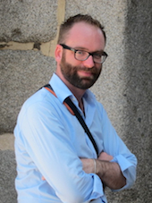

NEH Translations and Scholarly Editions Grant (2014-2016): Edition and Translation of Huon d’Auvergne, Pre-Modern Franco-Italian Epic
The purpose of this edition and translation project is to make the poem Huon d’Auvergne available in its multiple versions to a range of scholars, students, critics and linguists in a searchable, verifiable and easily read open-access digital format by the end of the three-year grant.
Dr. Leslie Zarker Morgan is leader of a team of fellow scholars who have been awarded an NEH Translation and Scholarly Editions grant of $200,000 for a translation and editing project. This three-year project (January 2014-December 2016) funds a digital edition and modern English translation of the last unedited Franco-Italian epic, Huon d’Auvergne, drawing on three manuscripts and one fragment, dating from 1341 to 1441.
Participants and their projects Leslie Zarker Morgan is Professor of Italian and French, Loyola University Maryland, and editor of the Geste Francor (Arizona: Medieval and Renaissance Texts and Studies, 2009), a fourteenth-century Franco-Italian chanson de geste. She has researched many aspects of the Franco-Italian tradition while preparing that edition, and afterwards while addressing issues that arose in its completion. Her part of the project is the edition of Huon d’Auvergne (Berlin, 1341), checking the Turin transcription, and overall coordination of the project.
Leslie Zarker Morgan is Professor of Italian and French, Loyola University Maryland, and editor of the Geste Francor (Arizona: Medieval and Renaissance Texts and Studies, 2009), a fourteenth-century Franco-Italian chanson de geste. She has researched many aspects of the Franco-Italian tradition while preparing that edition, and afterwards while addressing issues that arose in its completion. Her part of the project is the edition of Huon d’Auvergne (Berlin, 1341), checking the Turin transcription, and overall coordination of the project.
Shira Schwam-Baird is Professor of French at the University of North Florida (Jacksonville). She edited and translated Valentin et Orson (2011) and Adam de la Halle: Le Jeu de Robin et Marion (New York: Garland Publishing Inc., 1994). She holds a long-standing interest in translation and has published numerous articles about late medieval French literature. She is translating the Berlin Huon d’Auvergne into English, and checking the Berlin transcription as she translates.
Stephen Patrick McCormick is Assistant Professor of French, Washington and Lee University. He received his PhD from the University of Oregon in 2011 with a dissertation entitled, "Remapping the Story: Franco-Italian Epic and Lombardia as a Narrative Community (1250-1441)." Recently, he has published articles in Italian Studies and Viator related to the Huon d'Auvergne epic. Stephen is editing the Padua Huon d¹Auvergne and the Barbieri (Bologna) fragment. He will also coordinate with Washington and Lee University Library in creating the Huon d'Auvergne website and digital edition.
Alan Bernstein is Emeritus Professor of Medieval History, University of Arizona. His work, The Formation of Hell: Death and Retribution in the Ancient and Early Christian Worlds (Ithaca, NY: Cornell University Press, 1993) was nominated for the Pulitzer Prize in non-fiction among other honors. He brings his interest in the theology of hell and literary, legendary, and visual versions of the afterlife to our interpretations of Huon d’Auvergne’s famous trip through hell.
Jean-Claude Vallecalle is Emeritus Professor of Medieval French Language and Literature at Université Lyon-2, France. His Messages et messagers dans les chansons de geste françaises (Paris, Champion, 2006), is an authoritative treatment of the message-messenger trope in Old French epic, including Franco-Italian texts. With more than forty articles about Old French literature, five collections of edited essays, numerous bibliographical contributions to the Bulletin bibliographique de la Société Rencesvals and many book reviews, his knowledge of Old French literature and the bibliography of the chanson de geste in particular, assist in annotating, especially explaining references and lexicon.
 Mackenzie Brooks is Assistant Professor and Digital Humanities Librarian at Washington and Lee University. Prior to her current position, she worked as Metadata Librarian at W&L and at the Loyola University Chicago Health Sciences Library. She advises on TEI encoding and XML transformation for the Huon d’Auvergne project.
Mackenzie Brooks is Assistant Professor and Digital Humanities Librarian at Washington and Lee University. Prior to her current position, she worked as Metadata Librarian at W&L and at the Loyola University Chicago Health Sciences Library. She advises on TEI encoding and XML transformation for the Huon d’Auvergne project.
 Jeff Barry is Associate Professor and Associate University Librarian at Washington and Lee University. He was the principal investigator for the Cuban Heritage Digital Collection (IMLS grants, 2000 - 2005) at the University of Miami. He advises on Web technologies for the Huon d’Auvergne project.
Jeff Barry is Associate Professor and Associate University Librarian at Washington and Lee University. He was the principal investigator for the Cuban Heritage Digital Collection (IMLS grants, 2000 - 2005) at the University of Miami. He advises on Web technologies for the Huon d’Auvergne project.
 Brandon Walsh is Mellon Digital Humanities Fellow at Washington and Lee University. He received his PhD in English from the University of Virginia in 2015 with a dissertation entitled, "AudioTextual: Modernism, Sound Recordings, and Networks of Reception." He has held fellowships from the Scholars' Lab in the UVA Library and served as Project Manager for NINES. He advises on Web development and TEI implementation for the Huon d'Auvergne project.
Brandon Walsh is Mellon Digital Humanities Fellow at Washington and Lee University. He received his PhD in English from the University of Virginia in 2015 with a dissertation entitled, "AudioTextual: Modernism, Sound Recordings, and Networks of Reception." He has held fellowships from the Scholars' Lab in the UVA Library and served as Project Manager for NINES. He advises on Web development and TEI implementation for the Huon d'Auvergne project.